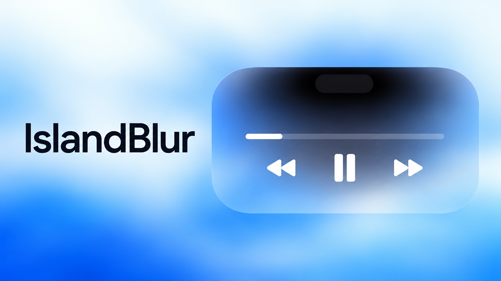

开发者
- ChatGPT 6.1（sol）
- JaySuen

为你的灵动岛提供更现代、更轻量化的显示效果。
反馈 Bug 和建议：在酷安 App 搜索用户名 JAYSuen 私信。反馈时建议注明系统版本、插件版本、复现步骤，并附截图或崩溃日志。
打开酷安官网支持无根与隐根越狱。设备需已支持或启用原生灵动岛；本插件不负责开启灵动岛。已在 iOS 16.5 的 iPhone 14 Pro，以及通过 DynamicCow 2.0 启用灵动岛的 iPadOS 17.0 iPad Pro 上验证。